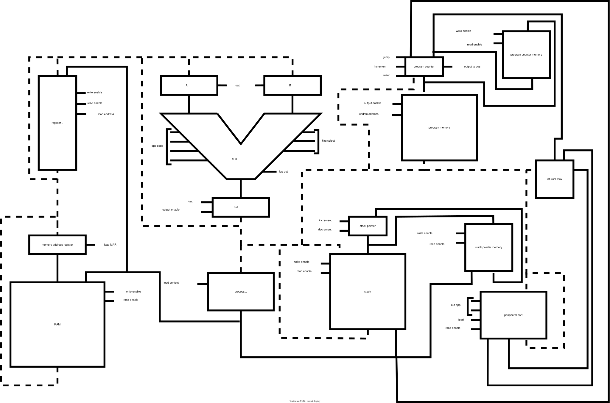

A comprehensive guide to the Assembly assembly language
The system is based on an 8-bit data bus architecture. The Arithmetic Logic Unit (ALU) supports eight fundamental operations: ADD, SUB, AND, OR, XOR, ECHO, left shift, and right shift. An optional inversion stage allows the output of any operation to be inverted, providing a total of sixteen arithmetic and logic operations.
The ALU operates on two dedicated input registers, A and B, and produces results in a single output register (OUT). The register file contains sixteen general-purpose registers that are used for computation, data storage, and instruction operands.
The system includes 256 bytes of data RAM and 256 bytes of stack memory. Program memory is organized as 1K × 16-bit words, where each instruction consists of an 8-bit opcode and an 8-bit operand field.
A peripheral interface is provided for communication with external devices. The interface uses three inputs:
A dedicated execute command triggers the peripheral interface to send the configured data to the selected device. On input events, an interrupt is generated. The device address is mapped to a corresponding service routine within the operating system, and program execution is redirected via a jump instruction.
Although the core data path is 8-bit, the memory subsystem uses wider addressing to support process separation at the hardware level. Dedicated memory structures are used to store the program counter and stack pointer for each process. Process 0 is reserved for the operating system.
| operation | opcode | description | number of clock cycles |
|---|---|---|---|
| ADD | 0x00 | Adds the value in register B to the value in register A and stores the result in the specified destination register. | 5 |
| SUB | 0x01 | Subtracts the value in register B from the value in register A and stores the result in the specified destination register. | 5 |
| AND | 0x02 | Performs a bitwise AND between registers A and B and stores the result in the specified destination register. | 5 |
| OR | 0x03 | Performs a bitwise OR between registers A and B and stores the result in the specified destination register. | 5 |
| XOR | 0x04 | Performs a bitwise XOR between registers A and B and stores the result in the specified destination register. | 5 |
| ECHO | 0x05 | Copies the value in register A to the output register and stores the same value in the specified destination register. | 5 |
| LSFT | 0x06 | Left shifts the value in register A by one bit and stores the result in the specified destination register. | 5 |
| RSFT | 0x07 | Right shifts the value in register A by one bit and stores the result in the specified destination register. | 5 |
| NADD | 0x08 | Adds registers A and B, inverts the resulting value, and stores the result in the specified destination register. | 5 |
| NSUB | 0x09 | Subtracts register B from register A, inverts the resulting value, and stores the result in the specified destination register. | 5 |
| NAND | 0x0A | Performs a bitwise AND between registers A and B, inverts the result, and stores it in the specified destination register. | 5 |
| NOR | 0x0B | Performs a bitwise OR between registers A and B, inverts the result, and stores it in the specified destination register. | 5 |
| XNOR | 0x0C | Performs a bitwise XOR between registers A and B, inverts the result, and stores it in the specified destination register. | 5 |
| NOT | 0x0D | Inverts every bit of the value in register A and stores the result in the specified destination register. | 5 |
| NLSFT | 0x0E | Left shifts the value in register A by one bit, inverts the result, and stores it in the specified destination register. | 5 |
| NRSFT | 0x0F | Right shifts the value in register A by one bit, inverts the result, and stores it in the specified destination register. | 5 |
| BRREQ | 0x10 | Branches to the address stored in the specified register if the values in registers A and B are equal. | 5 or 4 |
| BRRGT | 0x11 | Branches to the address stored in the specified register if the value in register A is greater than the value in register B. | 5 or 4 |
| BRRLT | 0x12 | Branches to the address stored in the specified register if the value in register A is less than the value in register B. | 5 or 4 |
| BRRNEQ | 0x13 | Branches to the address stored in the specified register if the values in registers A and B are not equal. | 5 or 4 |
| BRRGEQ | 0x14 | Branches to the address stored in the specified register if the value in register A is greater than or equal to the value in register B. | 5 or 4 |
| BRRLEQ | 0x15 | Branches to the address stored in the specified register if the value in register A is less than or equal to the value in register B. | 5 or 4 |
| BREQ | 0x16 | Branches to the specified immediate address or label if the values in registers A and B are equal. | 4 |
| BRGT | 0x17 | Branches to the specified immediate address or label if the value in register A is greater than the value in register B. | 4 |
| BRLT | 0x18 | Branches to the specified immediate address or label if the value in register A is less than the value in register B. | 4 |
| BRNEQ | 0x19 | Branches to the specified immediate address or label if the values in registers A and B are not equal. | 4 |
| BRGEQ | 0x1A | Branches to the specified immediate address or label if the value in register A is greater than or equal to the value in register B. | 4 |
| BRLEQ | 0x1B | Branches to the specified immediate address or label if the value in register A is less than or equal to the value in register B. | 4 |
| LDA | 0x1C | Loads the value from the specified register into register A. | 5 |
| LDB | 0x1D | Loads the value from the specified register into register B. | 5 |
| ST | 0x1E | Stores the value in the output register to the specified RAM address. | 4 |
| PUSH | 0x1F | Pushes the value from the specified register onto the system stack. | 6 |
| POP | 0x20 | Pops the top value from the stack into the specified register. | 6 |
| LEA | 0x21 | Loads the current program counter address into the specified register. | 5 |
| LDI | 0x22 | Loads an immediate constant value directly into the A register. | 4 |
| PERADD | 0x23 | Writes the value from the specified register to the peripheral address port to select a device. | 5 |
| PEROPP | 0x24 | Writes the value from the specified register to the peripheral opcode port to specify a command. | 5 |
| PERDAT | 0x25 | Writes the value from the specified register to the peripheral data port. | 5 |
| PEREXE | 0x26 | Signals the peripheral interface to execute the previously loaded command. | 4 |
| PERLD | 0x27 | Reads data from the peripheral interface and stores it in the specified register. | 5 |
| JMPR | 0x28 | Performs an unconditional jump to the address contained in the specified register. | 4 |
| JMP | 0x29 | Performs an unconditional jump to the specified immediate address or label. | 3 |
| TRAP | 0x2A | Invokes a system trap or operating system service routine at the specified trap address. | 3 |
| SP | 0x2B | loads immediate value program register | 6 |
| SPR | 0x2C | loads value program register from specified register. | 7 |

PM_ADDR – Program memory update addressPM_OE – Program memory output enablePM_INC – Program memory incrementPC_INC – Program counter incrementPC_RST – Program counter resetPC_OE – Program counter output enableRF_LD_ADDR – Register file load addressRF_RE – Register file read enableRF_WE – Register file write enableRF_OE – Register file output enableA_LD – Load register AB_LD – Load register BOUT_LD – Load output registerOUT_OE – Output register output enableALU_OP – Set ALU operationFLAG_SEL – Select flag conditionMAR_LD – Memory address register loadRAM_WE – RAM write enableSP_INC – Stack pointer incrementSP_DEC – Stack pointer decrementSTK_WE – Stack write enableSTK_RE – Stack read enableJMP – Jump enablePER_OP – Peripheral operation selectPER_LD – Peripheral loadPER_RE – Peripheral read enableSP_MEM_WE – Stack pointer memory write enableSP_MEM_RE – Stack pointer memory read enablePC_MEM_WE – Program counter memory write enablePC_MEM_RE – Program counter memory read enablePR_LD – Process register loadSP_JMP – Load stack pointer and jump— – Invalid or unused microinstruction cycle (triggers an hardware error condition)| operation | cycle 0 | cycle 1 | cycle 2 | cycle 3 | cycle 4 | cycle 5 | cycle 6 |
|---|---|---|---|---|---|---|---|
| ALU instructions | PM_ADDR | ALU_OP, OUT_LD, PM_OE, RF_LD_ADDR | OUT_OE, RF_WE | PC_INC | PC_RST | — | — |
| branch to register true | PM_ADDR | FLAG_SEL | PM_OE, RF_LD_ADDR | RF_OE, JMP | PC_RST | — | — |
| branch to register false | PM_ADDR | FLAG_SEL | PC_INC | PC_RST | — | — | — |
| branch immediate true | PM_ADDR | FLAG_SEL | PM_OE, JMP | PC_RST | — | — | — |
| branch immediate false | PM_ADDR | FLAG_SEL | PC_INC | PC_RST | — | — | — |
| LDA | PM_ADDR | PM_OE, RF_LD_ADDR | RF_RE, A_LD | PC_INC | PC_RST | — | — |
| LDB | PM_ADDR | PM_OE, RF_LD_ADDR | RF_RE, B_LD | PC_INC | PC_RST | — | — |
| ST | PM_ADDR | PM_OE, MAR_LD, RAM_WE | PC_INC | PC_RST | — | — | — |
| PUSH | PM_ADDR | PM_OE, RF_LD_ADDR | SP_INC | RF_RE, STK_WE | PC_INC | PC_RST | — |
| POP | PM_ADDR | PM_OE, RF_LD_ADDR | STK_RE, RF_WE | SP_DEC | PC_INC | PC_RST | — |
| LEA | PM_ADDR | PM_OE, RF_LD_ADDR | PC_OE, RF_WE | PC_INC | PC_RST | — | — |
| LDI | PM_ADDR | PM_OE, A_LD | PC_INC | PC_RST | — | — | — |
| PER OUT | PM_ADDR | PM_OE, RF_LD_ADDR | RF_OE, PER_OP, PER_LD | PC_INC | PC_RST | — | — |
| PEREXE | PM_ADDR | PER_OP, PER_LD | PM_INC | PC_RST | — | — | — |
| PERRD | PM_ADDR | PM_OE, RF_LD_ADDR | PER_RE, RF_WE | PC_INC | PC_RST | — | — |
| JMP/TRAP | PM_ADDR | PM_OE, JMP | PC_RST | — | — | — | — |
| JMPR | PM_ADDR | PM_OE, RF_LD_ADDR | RF_OE, JMP | PC_RST | — | — | — |
| SP | PM_ADDR | SP_MEM_WE, PC_MEM_WE | PM_OE, PR_LD | SP_MEM_RE, PC_MEM_RE, SP_JMP | PC_INC | PC_RST | — |
| SPR | PM_ADDR | SP_MEM_WE, PC_MEM_WE | PM_OE, RF_LD_ADDR | RF_OE, PR_LD | SP_MEM_RE, PC_MEM_RE, SP_JMP | PC_INC | PC_RST |
equals (EQ) → Zless than (LT) → Cnot equals (NE) → greater than or equal (GE) → greater than (GT) → · less than or equal (LE) → C + Z